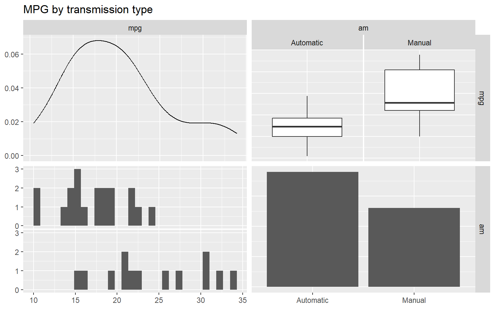
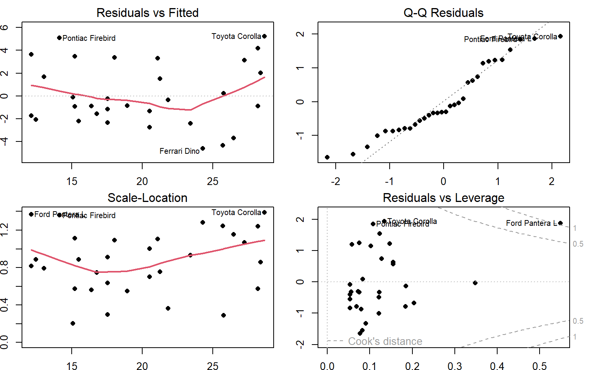

install.packages("devtools") # you only have to install it once
library(devtools)
install_github("rstudio/rmarkdown") # you only have to install it once
library(rmarkdown)
render("report_template.Rmd","pdf_document") # this renders the pdfCase Study 00: This is a template
Summary
This document provides a template for the Case Study reports. Reports should always start a short executive summary (call it an Abstract if you want) to give the reader a general idea of the topic under investigation, the kind of analysis performed, the results obtained, and the general recommendations of the authors.
There are (at least) two ways to render this document to pdf in R: one easy and one… well, less easy.
1. The easy way
Use RStudio as your editor, open the .Rmd file and click the Knit PDF button at the top of the editor.
2. The slightly-less-easy way
If you’re using any other R editor (such as the basic R editor), you have to use the render() function from the rmarkdown package:
Experimental design
A section detailing the experimental setup. This is the place where you will define your test hypotheses, e.g.: \[\begin{cases} H_0: \mu = 10&\\H_1: \mu<10\end{cases}\]
including the reasons behind your choices of the value for \(H_0\) and the directionality (or not) of \(H_1\).
This is also the place where you should discuss (whenever necessary) your definitions of minimally relevant effects (\(\delta^*\)), sample size calculations, choice of power and significance levels, and any other relevant information about specificities in your data collection procedures.
Description of the data collection
Whenever needed, you can also include an (optional) subsection describing the actual data collection, how it was performed, any adaptations or unexpected events that may have occurred, etc. Subsections like this can also be used for the sample size calculations or any other aspect that requires a longer discussion.
Exploratory Data Analysis
The first step is to load and preprocess the data. For instance,
data(mtcars)
fc<-c(2,8:11)
for (i in 1:length(fc)){mtcars[,fc[i]]<-as.factor(mtcars[,fc[i]])}
levels(mtcars$am) <- c("Automatic","Manual")To get an initial feel for the relationships between the relevant variables of your experiment it is frequently interesting to perform some preliminary (exploratory) analysis. This is frequently referred to as getting a feel of your data, and can suggest procedures (such as outlier investigation or data transformations) to experienced experimenters.
library(GGally,quietly = T, warn.conflicts = F) # This is just me getting fancy.
# There are much simpler ways ;-)
ggpairs(data=mtcars,columns=c(1,9),title="MPG by transmission type",
upper=list(combo="box"),lower=list(combo="facethist"),
diag=list(continuous="densityDiag",discrete="barDiag"))
Your preliminary analysis should be described together with the plots. In this example, two facts are immediately clear from the plots: first, mpg tends to correlate well with many of the other variables, most intensely with drat (positively) and wt (negatively). It is also clear that many of the variables are highly correlated (e.g., wt and disp). Second, it seems like manual transmission models present larger values of mpg than the automatic ones. In the next section a linear model will be fit to the data in order to investigate the significance and magnitude of this possible effect.
Statistical Analysis
Your statistical analysis should come here. This is the place where you should fit your statistical model, get the results of your significance test, your effect size estimates and confidence intervals.
model<-aov(mpg~am*disp,data=mtcars)
summary(model) Df Sum Sq Mean Sq F value Pr(>F)
am 1 405.2 405.2 47.948 1.58e-07 ***
disp 1 420.6 420.6 49.778 1.13e-07 ***
am:disp 1 63.7 63.7 7.537 0.0104 *
Residuals 28 236.6 8.4
---
Signif. codes: 0 '***' 0.001 '**' 0.01 '*' 0.05 '.' 0.1 ' ' 1Checking Model Assumptions
The assumptions of your test should also be validated, and possible effects of violations should also be explored.
par(mfrow=c(2,2), mai=.3*c(1,1,1,1))
plot(model,pch=16,lty=1,lwd=2)
Conclusions and Recommendations
The discussion of your results, and the scientific/technical meaning of the effects detected, should be placed here. Always be sure to tie your results back to the original question of interest!